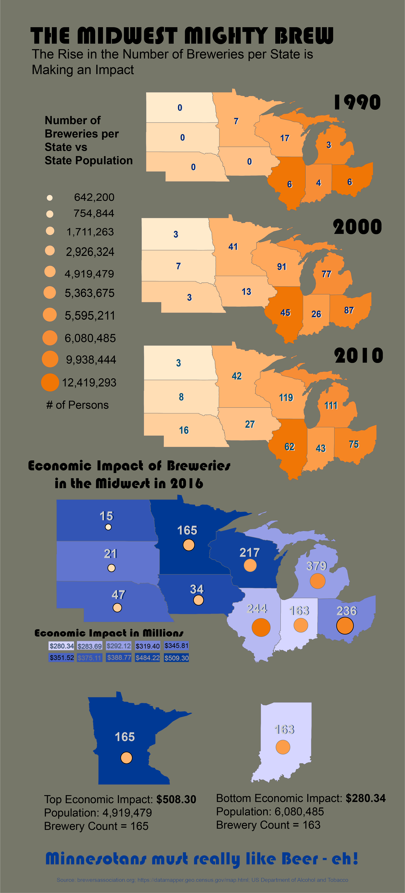

Develop a longform infographic of your choosing the includes a bivariate or multivariate map to construct a visual story. Export as .png
Develop a 21 day bike route akin to the Tour De France. Produce a detailed basemap that includes terrain, land cover, and place name labels to give the reader a sense of landscape and scenary for the tour. Export as .pdf